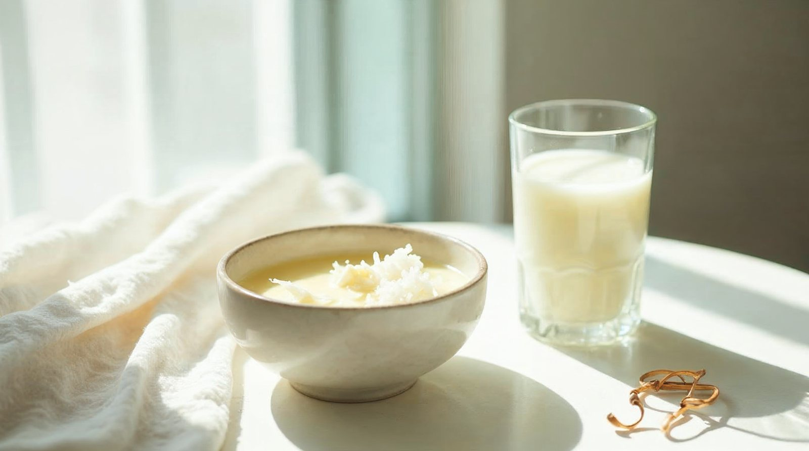
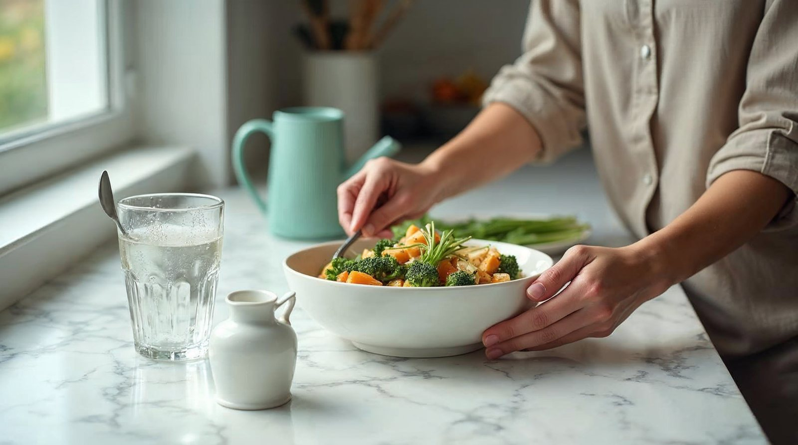
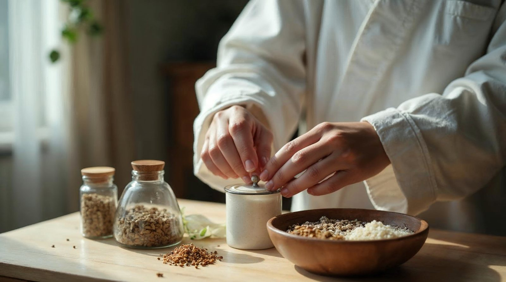
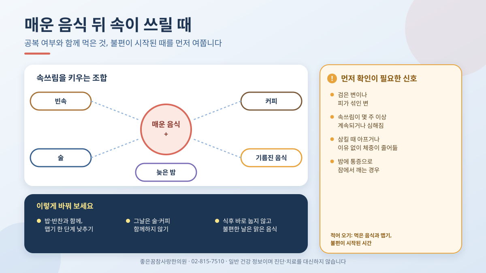

이종호 한의사 감수좋은꿈참사랑한의원 대표원장 (한의사 면허번호 19769)발행 2026-11-22 · 수정 2026-11-26
이 글의 차례
- 화끈한 것과 쓰린 것은 다른 얘기예요
- 왜 이런 불편이 생길 수 있나요
- 왜 지칠 때 매운 음식이 더 당길까요?
- 매운 음식 탓인지, 다른 원인인지 어떻게 구분하나요?
- 예를 들면 이런 경우입니다
- 스스로 점검해 보세요
- 먼저 이렇게 여쭙니다
- 일상에서 먼저 해 볼 수 있는 것
- 매운 음식과 함께 먹는 것도 봐야 하는 이유
- 매운 음식을 덜 부담스럽게 먹는 요령은?
- 한의원에서 함께 살필 수 있는 경우
- 속이 쓰린 날은 집에서 어떻게 지내면 좋을까요?
- 첫 방문 때는 이렇게 살핍니다
- 얼마나 지켜보고, 언제 상담하면 좋을까요
- 이렇게 기록해 오시면 상담이 쉬워집니다
- 이런 증상은 먼저 확인이 필요합니다
매운 떡볶이나 짬뽕을 먹은 뒤 속이 쓰리거나 화장실을 자주 찾게 되는 일은 흔합니다. 같은 음식이라도 공복이었는지, 술이나 커피를 곁들였는지, 그날 컨디션에 따라 반응이 크게 달라집니다. 매운 음식과 속을 함께 살피는 방법을 정리합니다.
진료실에서 이런 말씀 자주 들어요. "원장님, 저 매운 거 정말 좋아하는데 요즘은 먹고 나면 속이 쓰려요. 끊어야 하나요?" 저는 먼저 "원래 그래요"라고 말씀드려요. 매운 음식을 먹고 속이 화끈한 건 몸이 자극을 알아차리는 자연스러운 반응이거든요.
그런데 예전엔 괜찮았는데 요즘 들어 더 쓰리다면, 매운 음식이 달라진 게 아니라 내 속 사정이 달라진 경우가 많아요. 잠이 줄었거나, 끼니가 불규칙해졌거나, 긴장이 큰 시기를 지나고 있거나요. 그래서 저는 음식만큼 요즘 생활을 같이 여쭤요.
화끈한 것과 쓰린 것은 다른 얘기예요
매운 걸 먹을 때 입과 속이 화끈한 건 맵다는 감각 그 자체예요. 대개 먹고 나서 조금 지나면 가라앉거든요. 그런데 몇 시간 뒤까지, 혹은 다음 날까지 명치가 쓰리고 아프다면 그건 위가 자극을 받아 지쳤다는 신호에 가까워요.
저는 이 둘을 나눠서 봐요. 화끈함만 있다면 양과 먹는 방법을 조금 바꾸는 것으로 충분한 경우가 많고, 쓰림이 오래간다면 위 상태와 생활 리듬을 함께 살펴야 하거든요.
왜 이런 불편이 생길 수 있나요
- 매운 성분은 위와 장을 자극해 화끈거리거나 쓰린 느낌을 줄 수 있습니다.
- 빈속에 매운 음식을 먹으면 자극이 더 크게 느껴지는 경우가 있습니다.
- 술이나 커피, 기름진 음식과 함께 먹으면 속쓰림이 더 오래갈 수 있습니다.
- 스트레스가 많거나 잠이 부족한 시기에는 같은 양에도 속이 더 예민하게 반응하기 쉽습니다.
왜 같은 떡볶이인데 어떤 날은 괜찮고 어떤 날은 쓰릴까요? 저는 이걸 방패에 비유해요. 위 안쪽은 스스로를 보호하는 얇은 막으로 덮여 있는데, 잘 먹고 잘 잔 날엔 이 방패가 튼튼하고, 지친 날엔 얇아지는 거예요.
방패가 튼튼한 날엔 매운 자극이 와도 금방 지나가요. 그런데 끼니를 거르고 빈속에 매운 걸 먹거나, 며칠 잠이 모자란 상태라면 같은 자극도 더 깊이 들어오는 거죠. 그래서 음식보다 그날 내 몸 상태가 더 중요할 때가 많아요.
먹는 속도도 영향을 줘요. 매운 음식은 맛있으니까 빨리 먹게 되잖아요. 맵다 보니 물이나 단 음료를 같이 많이 마시게 되고, 그러면 배가 금방 차서 위에 부담이 더 커지기도 해요.
한의학에서는 속쓰림이 잦은 분을 볼 때 속에 열이 많은 쪽인지, 반대로 속이 차고 약해서 자극을 잘 못 견디는 쪽인지를 나눠서 봐요. 같은 속쓰림이라도 살피는 방향이 다를 수 있거든요.
속에 열이 많은 쪽은 입이 마르고 찬 것이 당기며 매운 걸 먹으면 얼굴까지 화끈하다는 분이 많아요. 속이 차고 약한 쪽은 조금만 먹어도 더부룩하고 손발이 차며, 매운 걸 먹으면 설사로 이어진다는 분이 많고요. 어느 쪽인지는 맥과 이야기를 함께 들어 보고 판단해요.
왜 지칠 때 매운 음식이 더 당길까요?
이게 재밌는 게 뭐냐 하면요, 일이 많고 지칠수록 매운 음식이 더 당긴다는 분이 정말 많아요. 매운맛은 입안에 강한 자극을 주니까, 잠깐이지만 답답한 마음이 뚫리는 느낌이 들거든요. 그래서 스트레스 받는 날 떡볶이가 생각나는 건 이상한 게 아니에요.
문제는 그런 날일수록 속은 이미 지쳐 있다는 거예요. 긴장하면 끼니가 엉키고, 잠이 줄고, 위도 예민해져 있거든요. 그 위에 매운 자극이 얹히니 평소보다 더 쓰린 거죠.
그래서 저는 "스트레스 받지 마세요"라고 말씀드리지 않아요. 그게 마음대로 되면 누가 힘들겠어요. 대신 지친 날엔 매운맛을 한 단계 낮추거나, 밥을 먼저 드시고 나서 드시라고 말씀드려요. 스트레스를 버티는 건 제가 같이 도와드릴게요.
매운 음식 탓인지, 다른 원인인지 어떻게 구분하나요?
매운 걸 먹은 뒤라서 매운 음식 탓으로만 생각하기 쉽지만, 사실은 다른 이유가 섞여 있는 경우도 많아요. 이렇게 나눠 보시면 도움이 돼요.
- 매운 걸 먹은 날에만 쓰리고 안 먹은 날은 편하다면, 음식 자극의 영향이 큰 쪽이에요.
- 매운 것과 상관없이 빈속일 때마다 쓰리다면, 식사 간격과 위 상태를 함께 봐야 해요.
- 먹고 바로 누우면 신물이 올라오고 가슴 쪽이 쓰리다면, 위산이 거꾸로 올라오는 쪽을 함께 봐요.
- 쓰림보다 아랫배가 아프고 화장실을 급히 찾게 된다면, 위보다 장이 예민한 경우가 많아요.
- 진통제를 먹기 시작한 뒤로 쓰림이 늘었다면, 약 이름을 적어 처방한 의사나 약사와 상의해 보세요.
이런 구분은 진료실에서 같이 하면 되니까 정확하지 않아도 괜찮아요. 어떤 날 쓰렸는지 기억나는 대로 말씀해 주시면 충분해요.
예를 들면 이런 경우입니다
- 예를 들어 점심을 거르고 오후 늦게 매운 라면으로 첫 끼를 드신 경우라면, 빈속에 들어간 자극 때문에 저녁까지 쓰린 일이 흔해요. 이럴 땐 매운맛을 줄이기보다 첫 끼를 순한 것으로 바꾸는 것부터 해 보세요.
- 예를 들어 금요일 저녁마다 매운 닭발이나 곱창에 술을 곁들이는 경우라면, 주말 내내 속이 불편할 수 있어요. 매운 음식과 술 중 하나만 고르는 날을 정해 두면 반응이 어떻게 달라지는지 비교해 볼 수 있어요.
- 예를 들어 마감이 몰린 주간에만 유독 매운 음식이 당기고 먹고 나면 쓰린 경우라면, 음식보다 긴장과 잠을 먼저 같이 봐요. 매운맛으로 스트레스를 푸는 분이 많은데, 그게 지친 속엔 부담이 되기도 하거든요.
- 예를 들어 야근 뒤 밤 열한 시쯤 매운 야식을 먹고 바로 잠자리에 드는 경우라면, 새벽에 속이 쓰려 깨거나 아침에 신물이 올라오는 일이 생기기 쉬워요. 이럴 땐 야식의 맵기보다 먹는 시각과 눕는 시각 사이를 먼저 벌려 보세요.
- 예를 들어 회사 근처 식당이 대부분 맵고 짠 메뉴라 점심 선택지가 좁은 경우라면, 매일 바꾸기는 어렵잖아요. 일주일에 두어 번만 순한 메뉴를 고르는 날을 정해 두고 그 주의 쓰림을 비교해 보세요.
스스로 점검해 보세요
- 매운 음식을 일주일에 세 번 넘게 먹는다.
- 매운 음식을 첫 끼나 빈속에 먹는 날이 많다.
- 매운 음식을 먹을 때 술이나 커피, 탄산음료를 자주 곁들인다.
- 먹고 나서 두세 시간 안에 눕는 날이 많다.
- 매운 걸 안 먹은 날에도 빈속에 쓰릴 때가 있다.
- 요즘 잠이 부족하거나 긴장이 큰 시기를 지나고 있다.
- 진통제나 다른 약을 자주 먹는다.
앞의 네 가지는 먹는 방법을 바꾸며 지켜볼 수 있는 단서예요. 뒤의 세 가지에 해당한다면 음식 말고도 살필 것이 있다는 뜻이라, 진료 때 표시해 오시면 이야기가 쉬워져요.

먼저 이렇게 여쭙니다
- 매운 음식을 일주일에 얼마나 드시나요?
- 먹은 직후에 불편한지, 몇 시간 뒤에 불편한지 어떤가요?
- 공복에 드시는지, 술이나 커피와 함께 드시는지 어떤가요?
- 속쓰림 외에 설사나 복통이 함께 있나요?
- 밤에 속이 쓰려 깬 적이 있나요?
- 하루 세 끼를 몇 시쯤 드시고, 거르는 끼니가 있나요?
- 요즘 잠은 몇 시간 정도 주무시고, 긴장이 큰 일이 있나요?
- 진통제나 위장약 등 지금 드시는 약이 있나요?
질문이 많아 보여도 미리 다 정리하지 않으셔도 돼요. 오시면 제가 하나씩 여쭤 볼게요. 기억나는 것만 말씀해 주시면 나머지는 대화하면서 같이 채워 가면 되거든요.

일상에서 먼저 해 볼 수 있는 것
- 매운 음식은 공복에 먹지 말고 밥이나 다른 반찬과 함께 먹기
- 맵기 단계를 한 단계 낮추고 양을 줄여 반응이 어떻게 달라지는지 적어 보기
- 매운 음식을 먹는 날은 술과 커피를 함께하지 않기
- 늦은 밤에는 먹지 않고 식후 바로 눕지 않기
- 불편한 날에는 맑고 따뜻한 음식으로 속을 쉬게 하기
매운맛을 좋아하는 분께 "끊으세요"라고 하면 어떨까요? 대개는 며칠 참다가 더 크게 드시게 되더라고요. 하고 싶은 걸 못 하게 하면 오래 못 가요. 저는 그래서 끊으시라는 말 대신 같이 조절해 보자고 말씀드려요.
딱 하나만 부탁드린다면, 매운 음식은 빈속에 첫 끼로 드시지 않는 거예요. 같은 음식이라도 밥이나 다른 반찬이 먼저 들어간 뒤에 먹으면 덜 쓰렸다는 분이 많거든요. 딴 거는 편하게 하셔도 돼요.
매운 음식과 함께 먹는 것도 봐야 하는 이유
매운 음식 하나만 놓고 보면 억울한 경우가 많아요. 사실은 같이 먹는 것들이 쓰림을 더 키우는 경우가 흔하거든요.
- 술: 매운 안주와 술을 함께하면 위가 두 번 자극을 받게 돼요. 다음 날까지 쓰림이 남기 쉬워요.
- 커피: 매운 점심 뒤 바로 진한 커피를 마시면 오후 내내 속이 쓰리다는 분이 많아요.
- 기름진 음식: 매운 볶음이나 튀김처럼 기름이 많으면 위에 오래 머물러 더부룩함까지 겹치기 쉬워요.
- 차가운 음료: 맵다고 찬 음료를 벌컥벌컥 마시면 속이 놀라서 더 불편하다는 분도 있어요.
그래서 저는 매운 걸 드신 날 무엇을 곁들였는지도 꼭 여쭤요. 매운맛은 그대로 두고 곁들이는 것 하나만 바꿨는데 덜 쓰렸다는 분도 계시거든요.
안 쓰리다고 다 끝난 게 아니에요. 쓰림이 가라앉아도 빈속에 다시 같은 방식으로 드시면 또 반복되기 쉬워요. 편해진 뒤에도 먹는 순서 하나는 이어 가 주셨으면 해요.
매운 음식을 덜 부담스럽게 먹는 요령은?
- 맵기를 고를 수 있다면 한 단계 낮춰서 시작하기
- 국물을 다 마시기보다 건더기 위주로 드시기
- 달걀, 두부, 흰밥처럼 부드러운 것을 곁들이기
- 맵다고 차가운 탄산음료를 연거푸 마시기보다 미지근한 물을 조금씩 드시기
- 천천히 드시고, 먹은 뒤 두세 시간은 눕지 않기
맵기를 낮추면 맛이 없다는 분도 계세요. 그 마음 저도 알아요. 그래서 맵기 대신 양을 줄이는 쪽을 고르셔도 괜찮아요. 어느 쪽이 내 속에 더 맞는지는 기록해 보면 알 수 있거든요.
외식할 때는 주문하면서 "덜 맵게 해 주세요" 한마디만 해도 선택지가 넓어져요. 집에서 끓일 때는 고춧가루를 처음부터 다 넣지 말고, 덜어 먹을 그릇에서 따로 맞추면 가족마다 맵기를 다르게 맞출 수 있어요. 작은 습관이지만 꽤 도움이 돼요.

한의원에서 함께 살필 수 있는 경우
- 매운 음식을 먹고 속이 쓰리거나 아픈 경우 위장의 상태와 식사 습관을 함께 살핍니다.
- 식후 속이 화끈거리는 일이 잦은 경우 식사 간격과 소화 리듬을 함께 여쭙니다.
- 스트레스가 많을 때 속이 예민해지는 경우 긴장과 잠을 함께 살핍니다.
- 매운 음식을 줄였는데도 빈속마다 쓰린 경우 식사 간격과 위 상태를 함께 봅니다.
- 속쓰림과 함께 입맛이 떨어지고 몸이 무거운 경우 소화와 피로, 잠을 함께 여쭙니다.
원래 속이 약해서 남들보다 매운 걸 잘 못 견딘다는 분도 계세요. 그건 의지가 약해서가 아니라 타고난 거예요. 그런 분은 남들 속도에 맞추기보다 내 속에 맞는 맵기와 양을 찾는 게 먼저예요. 그걸 같이 찾는 게 제 일이고요.
속이 쓰린 날은 집에서 어떻게 지내면 좋을까요?
- 그날 저녁은 흰죽이나 맑은 국처럼 부드럽고 따뜻한 음식을 평소보다 적게 드시기
- 커피, 술, 탄산음료, 시큼한 과일 주스는 쓰림이 가라앉을 때까지 쉬어 가기
- 먹은 뒤 바로 눕지 말고, 잘 때는 베개를 조금 높여 보기
- 배를 꽉 조이는 옷이나 벨트를 느슨하게 하기
- 쓰림이 있다고 끼니를 아예 거르기보다 조금씩 나눠 드시기
쓰린 날 우유를 찾는 분이 많은데, 잠깐 편하다는 분도 있고 오히려 더 불편하다는 분도 있어요. 사람마다 달라서, 드셨다면 그 뒤 반응을 같이 적어 두시면 돼요.
첫 방문 때는 이렇게 살핍니다
좋은꿈참사랑한의원에서는 모든 분의 맥을 먼저 짚고, 식사 시각과 양, 대변과 잠의 변화를 충분히 들어요. 필요하다고 판단될 때 설진·복진을 더해 속이 어떤 상태인지 함께 봐요.
그 뒤 상태에 맞춰 침이나 한약 상담 등을 정해요. 한약을 상의할 때는 지금 드시는 약부터 확인하고, 처방받은 약은 처방한 의사와 상의 없이 줄이거나 끊지 않아요.
귀가 전에는 식사에서 먼저 바꿔 볼 점 하나와 다음에 확인할 일을 알려 드려요. 치료는 제가 맡을게요. 매운 음식을 아예 못 드시게 할 생각은 없으니 편하게 오세요.
저도 매운 음식을 좋아하는 편이라 그 마음을 잘 알아요. 그래서 진료실에서도 "드시지 마세요"보다 "어떻게 드실지"를 같이 정하는 데 시간을 더 써요. 좋아하는 걸 지키면서 속도 지키는 방법을 찾는 거죠.
얼마나 지켜보고, 언제 상담하면 좋을까요
먹는 방법을 바꾼 뒤 1~2주쯤 매운 음식을 먹은 날과 쓰렸던 날을 같이 적어 보세요. 빈속을 피하고 양을 줄였을 때 쓰림이 덜하다면 그 방법을 이어 가시면 돼요.
방법을 바꿔도 2주 넘게 쓰림이 이어지거나, 매운 걸 안 먹은 날에도 자주 쓰리다면 상담을 받아 보세요. 속쓰림이 몇 주째 계속되면 내과에서 위 상태를 확인해 보시는 것도 함께 권해요.
이렇게 기록해 오시면 상담이 쉬워집니다
- 먹은 음식과 맵기, 공복 여부
- 불편이 시작된 시간(먹은 직후, 몇 시간 뒤)
- 함께 마신 술이나 커피
- 대변 변화와 복용 중인 약
기록은 길 필요가 없어요. "수요일 점심, 매운 짬뽕, 빈속, 3시간 뒤 쓰림" 정도로 한 줄씩만 남겨 주세요. 일주일만 모아도 어떤 날, 어떤 상황에서 쓰린지가 보이는 경우가 많아요.
쓰리지 않았던 날도 같이 적어 주시면 더 좋아요. 그날 무엇이 달랐는지를 알면, 그걸 한 번 더 해 보면 되거든요.
이런 증상은 먼저 확인이 필요합니다
- 검은 변이나 피가 섞인 변이 있는 경우
- 피를 토하거나 계속 토하는 경우, 복통이 갑자기 심해지는 경우
이런 신호가 있으면 한의원보다 가까운 병원이나 응급실을 먼저 찾으세요.

여쭙는 것
- 매운 음식을 일주일에 얼마나 드시나요?
- 먹은 직후에 불편한지, 몇 시간 뒤에 불편한지 어떤가요?
- 공복에 드시는지, 술이나 커피와 함께 드시는지 어떤가요?
생활에서 해 볼 것
- 매운 음식은 공복에 먹지 말고 밥이나 다른 반찬과 함께 먹기
- 맵기 단계를 한 단계 낮추고 양을 줄여 반응이 어떻게 달라지는지 적어 보기
- 매운 음식을 먹는 날은 술과 커피를 함께하지 않기
한의원에서 함께 살필 것
- 매운 음식을 먹고 속이 쓰리거나 아픈 경우 위장의 상태와 식사 습관을 함께 살핍니다.
- 식후 속이 화끈거리는 일이 잦은 경우 식사 간격과 소화 리듬을 함께 여쭙니다.
- 스트레스가 많을 때 속이 예민해지는 경우 긴장과 잠을 함께 살핍니다.
먼저 확인이 필요한 신호
- 검은 변이나 피가 섞인 변이 있는 경우
- 피를 토하거나 계속 토하는 경우, 복통이 갑자기 심해지는 경우
한눈에 보는 표
| 구분 | 핵심 |
|---|---|
| 여쭙는 것 | 매운 음식을 일주일에 얼마나 드시나요? 먹은 직후에 불편한지, 몇 시간 뒤에 불편한지 어떤가요? |
| 생활에서 해 볼 것 | 매운 음식은 공복에 먹지 말고 밥이나 다른 반찬과 함께 먹기 맵기 단계를 한 단계 낮추고 양을 줄여 반응이 어떻게 달라지는지 적어 보기 |
| 한의원에서 함께 살필 것 | 매운 음식을 먹고 속이 쓰리거나 아픈 경우 위장의 상태와 식사 습관을 함께 살핍니다. 식후 속이 화끈거리는 일이 잦은 경우 식사 간격과 소화 리듬을 함께 여쭙니다. |
| 먼저 확인이 필요한 신호 | 검은 변이나 피가 섞인 변이 있는 경우 피를 토하거나 계속 토하는 경우, 복통이 갑자기 심해지는 경우 |
자주 묻는 질문
매운 음식을 아예 끊어야 하나요?
반응은 사람마다 달라 양과 빈도, 먹는 방식을 조절하며 몸의 반응을 기록해 보는 편이 좋습니다.
한의원에서는 무엇을 살피나요?
식습관, 소화 상태, 대변의 모양, 수면과 스트레스를 함께 묻고 전반적인 상태를 살핍니다.
속쓰림이 자주 반복되면 어떻게 하나요?
증상 기록과 함께 내과에서 필요한 확인을 받으시기를 권합니다.
우유를 마시면 덜 쓰린가요?
잠깐 편하다는 분도 있지만 사람마다 달라서, 마신 뒤의 반응을 함께 적어 보세요.
좋은꿈참사랑한의원은 재진 때 지난번 이야기부터 이어서 여쭙니다. 진료시간과 예약은 오시는 길에서 확인하세요.
어디서 상담받을 수 있나요?
좋은꿈참사랑한의원은 서울 동작구 만양로2길 2 신성빌딩 3층·5층(서울 동작구 상도동, 7호선 상도역 3번 출구 근처)에 있습니다. 한의사 3명(이종호 대표원장, 조영기 수석진료원장, 정원영 진료원장)이 진료합니다. 진료시간은 평일 09:30~20:00(점심 13:00~14:00), 토·일·공휴일 09:30~15:00이며, 방문 전 전화로 확인을 권합니다. 예약은 네이버 예약, 카카오톡 상담, 전화 02-815-7510로 받습니다.
이 글은 일반적인 건강 정보이며 개인의 진단이나 치료를 대신하지 않습니다. 증상이 있거나 복용 중인 약이 있다면 진료를 통해 확인하세요. 치료 효과는 개인마다 다를 수 있습니다.
작성 기준: 일반적으로 알려져 있는 건강 정보를 참고해 정리했습니다(대표원장 감수). 증상 기록은 1~2주 동안 하루 1회, 비슷한 시간에 적어 오시면 지난 상태와 비교하기 쉽습니다.